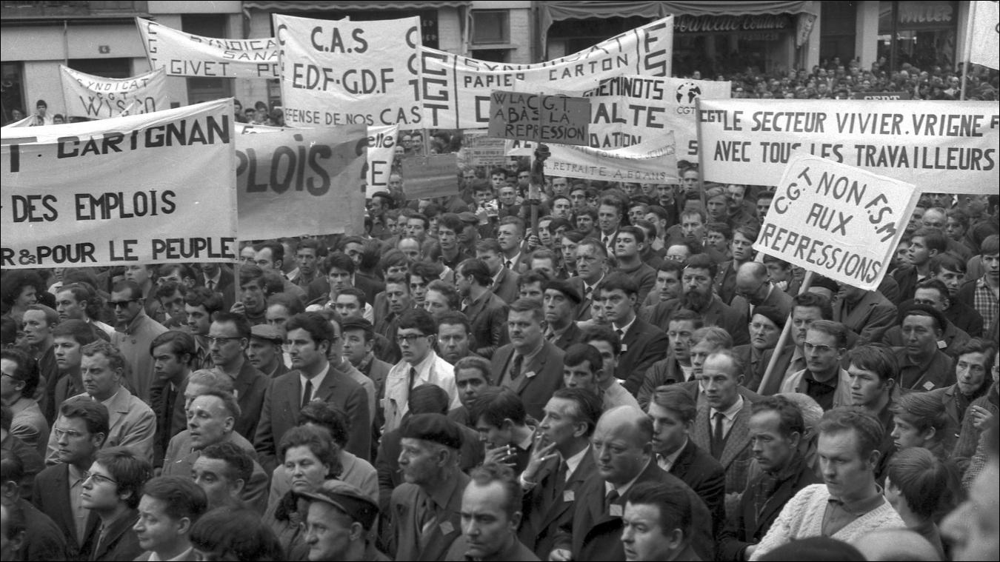

Il y a 50 ans...
Actualité révolutionnaire de la grève sauvage généralisée de Mai-Juin

Une formation sociale ne disparaît jamais avant que soient développées toutes les forces productives qu’elle est assez large pour contenir, jamais des rapports de production nouveaux et supérieurs ne s’y substituent avant que les conditions d’existence matérielles de ces rapports soient écloses dans le sein même de la vieille société. C’est pourquoi l’humanité ne se pose jamais que des problèmes qu’elle peut résoudre, car, à y regarder de plus près, il se trouvera toujours, que le problème lui-même ne surgit que là où les conditions matérielles pour le résoudre existent déjà ou du moins sont en voie de devenir.
— Marx, Critique de l’économie politique, Préface, 1859
Les masses ont été à la hauteur de leur tâche. Elles ont fait de cette « défaite » un maillon dans la série des défaites historiques, qui constituent la fierté et la force du socialisme international. Et voilà pourquoi la victoire fleurira sur le sol de cette défaite. « L’ordre règne à Berlin ! » sbires stupides ! Votre « ordre » est bâti sur le sable. Dès demain la révolution « se dressera de nouveau avec fracas » proclamant à son de trompe pour votre plus grand effroi J’étais, je suis, je serai !
— L’ordre règne à Berlin, Rosa Luxemburg, 1919
La grande grève générale sauvage de plus de 10 millions de prolétaires en mouvement au printemps 1968 faillit (mais faillit seulement…) balayer tous les responsables de tous les camps de la marchandise en un temps où la crise de l’économie politique ne faisait alors que commencer le parcours de son impossible reproduction. En revanche, lorsque l’économie politique de la crise se reproduira comme impossibilité devenue de son parcours, la nouvelle grève générale, par la sauvagerie de sa grandeur et la grandeur de sa sauvagerie, anéantira tous les apologistes du Capital.
— Commentaires sur l’extrême radicalité des temps derniers : critique de la dictature démocratique du spectacle de la marchandise terminale…
Mai 68 commémoré par le spectacle de la marchandise ou comment ensevelir la radicalité de la lutte des classes…
Déjà cinquante-ans… Alors que des présidentielles aux législatives, le spectacle de la crise de la marchandise a rencontré de plus en plus de difficultés à embrigader durant des mois le prolétariat sur le terrain du cirque électoral, toutes les fractions politiques de la servitude généralisée, de l’extrême droite à l’extrême gauche du Capital, s’emploient aujourd’hui à une vaste opération de célébrations-occultations destinée à masquer et dénaturer l’essentiel de ce qui fit la radicalité profonde des événements pour mieux mettre en relief les simples jeux de simulation et de fausseté qui permirent la maintenance rénovée de la résignation.
Pour la pensée radicale, tirer les leçons du mouvement réel de Mai-Juin 68, c’est exclusivement contribuer à la plus grande clarification anti-économique et anti-politique possible par rapport à toutes les défigurations qui maquillent les véritables racines, développements et implications d’une telle explosion sociale. C’est présentement intervenir efficacement en tant que cohérents jalons de conscience, c’est mener une activité théorico-pratique communarde au sein de la dynamique générale du prolétariat, en regardant l’histoire de manière dialectique c’est-à-dire aux antipodes des jacasseries superficielles qui se perdent dans l’empirie surfacière et l’épiderme égocentrique.
En cette année 2018, le grand tintamarre d’insignifiance du crétinisme universitaire et médiatique de la marchandise vient faire œuvre normale de falsification autour de la commémoration des 50 ans de Mai 68 présenté évidemment comme simple révolution culturelle du Capital permettant ainsi la libération festive des mœurs adéquate à la modernisation accomplie du marché narcissique de la liberté despotique du profit.
En fait et c’est là l’essentiel, la réalité sociale est toujours hétérogène et la révolution et la contre-révolution œuvrent toujours là sur le même terrain et c’est pourquoi la seconde parle toujours avec l’apparence des mots de la première afin de l’obscurcir, l’embrumer et la neutraliser. Mai 68, c’est donc certes l’émancipation atomistique de l’individu dans le libre-échangisme généralisé et l’américanisation forcenée de la société mais c’est aussi et d’abord le sommet d’une décennie d’insubordination sociale grossissante. Ce n’est donc pas l’agitation étudiante et le pacifisme vietnamiste arrangé qui fait là nouveauté mais le débrayage radical de millions de prolétaires à une échelle jamais atteinte. Certes, cette grève, pour massive qu’elle fut, resta contenue par tous les pouvoirs politiques et syndicaux du Capital mais un ouvrier français sur deux y a quand même activement participé d’une manière ou une autre et c’est là l’essentiel puisqu’il fut là bien visible que l’agitation sociale peut faire trembler les services secrets, la police et toutes les pègres gouvernementalistes…
La contradiction entre le développement des forces productives et les rapports sociaux de production atteint toujours son moment historique le plus déterminant lorsqu’elle se manifeste centralement dans l’antagonisme qui oppose le mouvement révolutionnaire contre le travail à l’idéologie de son amélioration la plus poussée. Ainsi, l’idéologie révolutionnaire des gauchistes du Capital qui a servi de laboratoire mystificateur à tous les dirigeants politiques et syndicaux qui ont voulu façonner un modèle de nouvelle société correspondant à la réification la plus pléthorique a bien constitué l’esprit du Mai des lois du marché actualisé pendant que les prolétaires qui prenaient la parole au nom de la vie vraie incalculable contre tous les spécialistes de la conscience aliénée exprimaient, eux, l’esprit d’un Mai fondamentalement antithétique ; celui de cette puissance d’ex-ister dans la qualité infiniment choquante du Beau inépuisable et de l’anti-mercantile authentique qu’aucun gouvernement de la quantité ne saurait tolérer.
Si quelques groupes à tendance maximaliste surent certes appréhender la société du spectacle propre à la domination réalisée du Capital, fort peu eurent cependant vraie capacité à saisir le déterminisme historique de cette nécessité et concevoir que Mai 68 fut tout sauf un coup de tonnerre dans un ciels serein. Ainsi pour beaucoup de dogmatiques élitistes qui confondent l’histoire mondiale avec l’impatience prétentieuse de leur nombril inculte, ce qui aurait été attaqué en Mai, ce serait l’économie capitaliste développée fonctionnant « bien ». Or et bien évidemment, la juste perception des choses démontre précisément l’antipode… L’éruption révolutionnaire est bien venue d’une crise de l’économie de la soumission qui a généré une situation de crise dans tous les lieux de soumission à l’économie.
Le mouvement de Mai, c’est avant tout la grève spontanée et l’occupation critique de l’espace qui éclate et qui partout s’étend naturellement et instinctivement en conflits radicaux, non seulement parce que plus durs que les sermons de renoncement des flics syndicaux et politiques de l’asservissement perfectionné, mais en premier lieu parce que cette conflictualité pose même inconsciemment la racine véridique des problèmes historiques qui formalisent l’insipidité et le faux. Dans toutes les usines, de Renault à Flins en passant par Sud-Aviation à Nantes, c’est partout le même mouvement qui se dessine. Malgré les vastes opérations de sabordage menées par les managers syndicaux et politiques de la contre-révolution et au lendemain de la grande mystification démobilisatrice du 13 mai, les prolétaires cessent d’accepter de perdre leur temps et dé-couvrent par la rencontre riche de la parole collective indisciplinée les conditions d’un dépassement du cercle vicieux qui lie leurs ennemis vraiment visibles et leurs faux-amis si mal déguisés.
Le fétichisme de la marchandise est un spectacle d’indistinction et de renversement généralisés qui voit universellement le fallacieux se présenter comme véridique et vice versa en permettant ainsi à la dictature démocratique de l’économie politique de l’inversion de se reproduire tant que le capitalisme n’a pas atteint les limites historiques de son impossible reconduction. Si le prolétariat ne peut abolir le Capital, c’est bien entendu parce qu’il est confronté à la force historique d’une puissance bien réelle qui a encore justement la puissance de demeurer une réalité historique.. Les illusions réformistes que se font les prolétaires et qui rendent ainsi possible la perpétuation de la domination avant d’être une question de représentation renvoient à la matérialité concrète de l’effondrement non-advenu de la reproduction historique de la marchandisation dont l’idéologie du progrès constitue le mensonge central. Tant que les prolétaires ne se battent pas contre ceux qui prétendent parler à leur place, ils ne pensent rien d’essentiel puisque ce qu’ils pensent alors leur vient de l’idéologie du cheffisme et de l’amélioration dont le projet consiste uniquement à perfectionner l’abondance colorée de la misère. Comme nous l’a appris Hegel, il arrive aux hommes ce qui leur ressemble en la vérité de leur temps… Tandis que la perspective contre-révolutionnaire est la conquête du pouvoir à tous les niveaux de la survie, celle du prolétariat révolutionnaire est la destruction de tous les pouvoirs comme mouvement de la communisation qui se hausse au niveau de la vie auto-émancipée.
Parler anti-idéologiquement de Mai 68, c’est appréhender la dialectique des profondeurs qui causa matériellement le surgissement et le développement de luttes massives concernant plus de 10 millions de femmes et d’hommes en insubordination charnellement vécue. Tant que le mouvement social ne va pas jusqu’à la destruction de l’argent et de l’État, des idéologies peuvent toujours se construire sur tel ou tels aspect particulier de ses limites encore prisonnières du vieux monde. C’est d’ailleurs sur ce terreau que les classes dominantes trouvent évidemment leurs meilleurs interlocuteurs afin que la schizophrénie mégapolitaine de la loi de la valeur puisse continuer de se parler à elle-même. À la gauche de la gauche du Capital, les gauchistes de la marchandise ont ainsi depuis longtemps fini de se dévoiler en tant que bureaucrates du meilleur renouvellement capitaliste envisageable. Le trotskisme, le maoïsme et la faune libertaire n’ont jamais constitué autre chose que différents secteurs de l’extrémisme capitaliste le plus spectaculaire. Il est donc normal que la plupart des pseudo-révolutionnaires célèbres de 68 soient devenus les meilleurs représentants de commerce de toutes les élucubrations et tromperies immigrationnistes, terroristes, écologistes, féministes et anti-discrimationnistes par lesquelles le gouvernement du spectacle mondial s’escrime à tenter de remplacer la lutte de classe consciente contre l’argent par le vivre ensemble dans l’angoisse du consommer débile et de l’aménagement capitaliste le plus torpide et le plus égalitairement scatologique.
La marchandise bien-pensante a toujours adoré le gauchisme lequel est bien le meilleur dérivatif envisageable pour saper les mouvements de contestation sociale et ainsi conforter les mouvements de réorganisation et de dépoussiérage de l’exploitation vers le triomphe vulgaire de la liberté des égoïsmes les plus chosifiés.
À cette époque et plusieurs nuits de suite, Jacques Chirac, alors secrétaire d’État à l’Emploi, prend assidûment part aux négociations secrètes les plus secrètes entre le patronat, les syndicats et l’État dans le dessein d’éteindre le feu communier qui se répand. Il rencontre clandestinement et à plusieurs reprises Henri Krasucki au nom de la CGT. On a beaucoup glosé sur le fait que le futur président de la République y était allé armé d’un revolver. « C’était une période de grande agitation et j’avais intérêt à être armé » a t-il toujours répondu. Non pas à l’égard de Krasucki, bien entendu, mais « compte tenu du climat de tension extrême… ». Tout est ainsi dit : les partis et les syndicats de la gauche du Capital travaillent effectivement ensemble avec l’État en tant que co-dirigeants de la contre-révolution pour superviser et soumettre le mouvement d’incandescence du prolétariat de manière à casser la grève sauvage.
Simultanément, c’est à bord d’une DS appartenant à Paris Match, propriété du très américanolâtre Jean Prouvost que Cohn-Bendit qui baragouinait Noir et Rouge strictement à l’envers, a pu s’exfiltrer d’Allemagne le 28 mai, après son interdit de territoire français par arrêté d’expulsion du 21 mai précédent, pour venir en vedette de duperies faire retentissante tricherie à un meeting à la Sorbonne. De fait, si le Pentagone et la CIA étaient fortement inquiets de voir la France livrée à l’émeute de l’insubordination ouvrière, ils n’en étaient pas moins très satisfaits de voir là progressivement s’éteindre les derniers rêves de cette vieille souveraineté française qui avaient osé réprouver les manœuvres d’agression de l’impérialisme américano-sioniste tant au Vietnam qu’en Palestine alors même que de Gaulle n’avait cessé d’extravaguer sur le mirage d’un capitalisme multipolaire et tempéré qui aurait pu échapper à l’omnipotence impitoyable du dollar. Quoi donc de plus normal que les services américains se soient particulièrement intéressés tant financièrement qu’idéologiquement à toutes les sectes du spectaculaire extrême puisque le gauchisme est la seule contre-révolution envisageable lorsqu’il s’agit d’échapper aux risques qui résultent d’une sédition dont les remuements laissent trop visiblement apparaître la direction de la vraie révolution.
Que le piètre et vaseux Cohn-Bendit ait terminé dans les bras de la Macronie rothchildienne la plus glauque pour applaudir à toutes les infamies du spectacle de la marchandise terminale est on ne peut plus logique. C’est là le fin mot de l’esprit le plus-contre-révolutionnaire de Mai à l’opposé de l’esprit réfractaire de la grève sauvage. Le gauchisme a marqué là que le stalinisme était entré en phase de sénescence et qu’il était à sa gauche, le moyen le plus approprié de dévoyer et de briser la lutte des classes radicalisée tant que la crise historique de la marchandise ne permettrait pas au prolétariat de produire l’intervention autonome de son auto-négation. Que par delà toutes les égarements, décompositions et recompositions, il subsiste un invariant général persistant dans le vaste troupeau de la désagrégation gauchiste ; celui de l’idolâtrie du grand remplacement par l’armée de réserve immigrée et du lumpenprolétariat des banlieues trafiquantes, explique pourquoi l’État a toujours recruté ses meilleurs troupes de choc publicitaire dans l’intelligentsia la plus grossière de l’idéologie anti-raciste qui entend substituer au projet communard d’un monde sans argent, celui du commerce mondial d’une égalité infinie dans la réussite de l’acquisition.
C’est aujourd’hui un secret de polichinelle que c’est pour prévenir le retour d’un nouveau mai 68 que toute la nomenklatura patronale est venu défiler empressée dans les bureaux ministériels de l’ère Pompidou afin d’obtenir l’ouverture des vannes migratoires permettant de dissoudre la détermination historique de l’ancienne homogénéité sociale qui expliquait la spéficité communeuse si dangereuse du continent ouvrier européen afin de voir ainsi émerger à sa place, l’aliénation modernisée des transactions qui fusionne là maintenant la passivité du temps réifié le plus à la page et celle du fatalisme afro-oriental le plus arriéré si bien analysé par Marx poursuivant Hegel.
Si tout ce qui a suivi mai 68 a donc consisté pour le Capital à se préserver de cette lutte de classe si préoccupante, il faut bien revenir à la source de la source de ce qui fit naître un mouvement social si alarmant.
Toute l’année 1967, des symptômes remarquables avaient signalé l’importance de la détérioration des positions de l’idole Capital en France. Le nombre des chômeurs croissait régulièrement jusqu’à atteindre les 500 000 au début de 68 et l’Agence nationale pour l’emploi (ANPE) venait d’être créée par Jacques Chirac. La France rurale rentrait dans le progrès accéléré des dévastations industrielles de la vie agricole et le monde ouvrier était, lui, touché de plein fouet par les mutations d’un procès d’exploitation de plus en plus intensifié… Les jeunes paysans, ouvriers et étudiants issus d’une réalité prolétarienne en pleine recomposition se voyaient là placés au carrefour intensément crisique d’une France d’hier qui finissait de voir mourir ses traditions pré-capitalistes et d’une France du futurisme mercantile absolutiste qui commençait seulement à tout repenser en termes d’accumulation transformée…
Dès le début 1967, les syndicats ont été très significativement débordés à de nombreuses reprises… Des affrontements importants avec les forces de l’ordre ont eu lieu à Bordeaux, à l’usine d’aviation Dassault, à Besançon ou dans la région lyonnaise chez Rhodia ou à Berliet, dans les mines de Lorraine ainsi que dans les chantiers navals de Saint-Nazaire d’ailleurs paralysés par une grève générale le 11 avril. Mais c’est indubitablement à Caen, en Normandie – en un territoire particulièrement emblématique des modifications capitalistes rencontrées dans la géo-histoire du devenir rural et urbain des mutations capitalistes d’alors – que le prolétariat va mener un de ses combats les plus démonstratifs vers ce qui va peu à peu conduire à Mai 68. Le 20 janvier 1968, les syndicats de l’usine de camions Saviem avaient lancé un mot d’ordre inoffensif de grève d’une heure et demie mais la base, jugeant cette action complètement déplorable est partie spontanément en grève le 23. Le surlendemain, à 4 heures du matin, les CRS démantèlent le piquet de grève et permettant ainsi aux cadres et aux jaunes d’entrer dans l’usine. Les grévistes décident de se regrouper au centre ville où ils sont alors rejoints par des ouvriers d’autres entreprises qui sont également entrés en grève. À 8 heures du matin, 5000 personnes convergent vers la place centrale : les gardes mobiles les chargent brutalement, notamment à coups de crosse de fusil. Le 26 janvier, les travailleurs de tous les secteurs de la ville rejoints par de nombreux étudiants manifestent leur solidarité : un meeting sur la place centrale rassemble 7000 personnes à 18 heures. À la fin du meeting, les gardes mobiles chargent pour évacuer la place mais sont surpris par la résistance ouvrière. Les affrontements dureront toute la nuit ; il y aura 200 blessés et des dizaines d’arrestations. Six jeunes manifestants ouvriers écopent de peines de prison ferme de 15 jours à trois mois. Mais bien loin de faire reculer la volonté de lutte, cette répression ne fait que provoquer l’extension et la radicalité du mouvement… Le 30 janvier, on compte 15 000 grévistes à Caen. Le 2 février, les autorités et le patronat sont obligés de reculer. On lève les poursuites contre les manifestants, On augmente les salaires de quelques pour-cents…. Le lendemain, le travail semble reprendre mais, sous l’influence des jeunes ouvriers, les débrayages se poursuivent encore pendant plusieurs semaines à la Saviem.
Saint-Nazaire en avril 67 et Caen en janvier 68 ne sont pas les seules villes à être touchées par des grèves massives impliquant une grande partie de la population ouvrière. C’est aussi le cas dans d’autres villes de moindre importance comme Redon en mars ou Honfleur en avril. Ces grèves massives de tous les exploités d’une ville ou d’une région préfigurent bien ce qui va se passer à partir du milieu du mois de mai dans tout le pays. Les salaires réels amorçaient une baisse indéniable qui révélait aussi la chute élevée du salaire relatif comme expression confiscatoire de l’écart entre la part de profit produit et la partie de salaire octroyée… Et la classe ouvrière commençait à subir les premières attaques capitalistes d’envergure avec notamment les fameuses ordonnances de 67 sur la Sécurité Sociale… Tout cela n’est nullement le produit du hasard mais s’inscrit dans un contexte planétaire de crise du capitalisme mondial et donc sur une accentuation de la dégradation des conditions générales de reproduction de la force de travail. La racine première du mouvement de mai dans le cadre d’une globalisation croissante des économies nationales marquait donc le début d’une crise mondiale de la reproduction du système capitaliste lui-même. Cette réapparition de la crise que tous les thuriféraires du fanatisme du travail n’avaient cessé de considérer comme définitivement disparue à travers le phantasme bêtasse des Trente Glorieuses marquait la fin de la période de reconstruction qui avait suivi la deuxième boucherie impérialiste. La dynamique de saturation croissante des marchés venait rappeler que la baisse tendancielle du taux de profit est la loi naturelle du spectacle de la marchandise et que plus grossit lamasse de profit généré par le productivisme de la technique, plus diminue le taux de profit qui constitue la seule fin en soi du rapport social d’exploitation et d’extorsion de plus-value.
À cet instant, le niveau des infrastructures industrielles et commerciales du Japon et des pays détruits en Europe qui avait constitué un débouché majeur pour l’économie mondiale depuis deux décennies voyait les balances commerciale des pays concernés redevenir équilibrées voir excédentaires alors que celle des USA se trouvait dans une dynamique déficitaire en 1968. Par delà la facticité de l’expansion d’après-guerre, la concurrence allait s’exacerber et plonger l’ensemble du monde-marchandise dans la crise ouverte qui verrait les grandes puissances de la technologie du Capital s’affronter sur le terrain d’une guerre économique et monétaire redoublée par le biais notamment de la baisse du dollar.
Depuis 1914 qui marque l’entrée en décadence historique du mode de production capitaliste condamné dorénavant à régulièrement s’auto-détruire afin de liquider sa gigantesque surproduction matérielle et humaine pour faire face à la domination réelle advenue de la valeur, les causes qui contrecarrent la baisse du taux de profit deviennent l’archétype même de l’accumulation fondée sur la plus-value relative. De la sorte, la dévalorisation devient le principe même de l’accumulation puisque l’accumulation n’est plus que le spectacle sans fin des cumuls de la dévalorisation. La valorisation, en produisant toujours davantage de travail mort machinique, pose et impose alors la dévalorisation constante du Capital en situation permanente de dé-capitalisation, c’est cette apogée du mouvement échangiste qui exprime le périgée de tous les échanges de tous ses mouvements…
Dans ce champ de la crise de la domination réalisée de la valeur, la dématérialisation de la monnaie telle que Marx l’a fort bien anticipée singulièrement dans les Grundrisse et dans le Livre troisième du Capital vient dire que l’or ne pouvait servir de mesure des valeurs que parce qu’il est lui-même un produit du travail vivant. Le développement du Capital sur la base technicienne frénétique de la plus-value relative et sa crise remettent en cause la capacité du travail à valoriser le capital et donc à être la mesure de la production. La monnaie doit perdre son caractère de monnaie-marchandise mais cette perte est antagonique aux bases mêmes du Capital en tant que ce dernier est valeur en procès du procès de la valeur.
L’abandon de l’étalon-or pendant la guerre vient signifier que l’entrée en domination réelle de la valeur en 1914 annonce la crise arrivée de la marchandise universelle en tant qu’équivalent général d’un monde d’automates sociaux sur-déterminés par le mouvement ascensionnel du travail mort, l’extension des marchés du crédit et le développement intensif du capital fictif. Les Accords de Bretton Woods qui dresseront les grandes lignes du système financier international mis en place après 1944 donneront alors à l’impérialisme américain le pouvoir reconnu de garantir la valeur du dollar mais sans être obligé d’avoir une contrepartie en or aux dollars émis. Les États-Unis, ne voulant pas voir disparaître leur encaisse-or, suspendront la convertibilité du dollar en août 1971. Le système des taux de change fixes s’écroulera définitivement en mars 1973 avec l’adoption du régime de changes flottants, c’est-à-dire qu’ils s’établiront dorénavant en fonction des seules déterminations générales du marché.
La domination formelle se divise en deux phases, la première qui se termine au milieu du XIXème siècle et qui repose sur l’extraction exclusive de la plus-value absolue comme résultat du seul travail humain directement exploité. La seconde jusqu’en 1914 avec une première combinaison des deux formes de plus-value, mais avec prépondérance continuée de la plus-value absolue. Ainsi, si 1914 marque l’entrée dans la domination réelle du Capital qui se débarrasse de toutes ses antériorités pré-capitalistes en activant un procès de travail qui devient spécifiquement capitaliste, toute la période avant 1968 voit exister une combinaison des deux formes de plus-value, mais cette fois avec prédominance limitée de la forme relative comme résultat de la productivité du travail humain machinisé. À partir de 1968 et c’est là tout l’enjeu substantiel intense de ce moment dialectique, une seconde phase apparaît avec prépotence dorénavant absolue de la forme relative qui tend instrumentalement à tout digérer.. Ce qui signale au niveau mondial que ce qui est posé fondamentalement parle fameux VI° Chapitre du Capital à savoir que la production capitaliste devient là production et reproduction du rapport de production spécifiquement capitaliste s’auto-valide pratiquement en tant que le système de la réification des machines-outils automatiques est emblématique d’un univers à travers lequel l’usage intensif de la technoscience de l’aliénation se trouve en tout lieu diffusée. Autrement dit, 1968 ouvre la voie à l’entrée en domination réelle supérieure, c’est-à-dire à ce moment où commencent à travailler dans une nouvelle longue durée les conditions objectives de production du procès de caducité du fétichisme cybernétique de la marchandise lui-même.
L’extraction de plus-value sous sa modalité relative, aussi bien au niveau du procès de production immédiat qu’à celui de la reproduction d’ensemble planétaire, est le principe de développement et de trans-formation de la domination réelle de la valeur. Tant au niveau de la production du procès de la valorisation qu’à celui de la valorisation du procès de la reproduction, se dessinent, au moment de la fin de la première phase de la domination réelle, des obstacles à la poursuite de l’accumulation telle que l’extraction de plus-value sous son mode relatif avait elle-même jusque là structuré le mouvement de l’ accumulation. En cet instant où ce qui subsistait encore des restes de la domination formelle au sein même d’une domination réelle seulement formellement réelle était objectivement devenu une entrave intolérable à la fluidité démocratique de l’auto-présupposition dictatoriale du Capital, il était normal que toutes les vieilles contraintes de la circulation, de la rotation, de l’accumulation, de l’idéologie et de la domestication qui entravaient la transformation et l’accroissement du surproduit en plus-value et capital additionnel soient enfin supprimées. C’est là tout l’enjeu des contradictions de 68 qui dit tout à la fois ce que le Capital entend faire pour moderniser les conditions de subordination aux impératifs de la valorisation et la tendance historique à toujours voir renaître la radicalité qui refuse de jouer le jeu de la politique et de l’État. La France va là connaître, compte-tenu des spécificités de son long devenir historique de fièvre sociale vigoureuse, l’expression la plus exacerbée de toute une période de soubresauts internationaux, celle de la fin des années 60 en tant que fin de la domination réelle inférieure. La grève générale sauvage qui porte en elle l’émancipation du travail en tant que ce dés-enchaînement implique la disparition du travail et non son embellissement montre là que les pires ennemis du prolétariat parlent toujours la langue du travail émancipé donc maintenu et renforcé. Cette grève se singularise là autour de trois caractéristiques fondamentales nettement marquées :
-
Ce n’est pas un événement politico-social français accidentel mais une production internationale nécessaire qui témoigne crisiquement que le fétichisme de la marchandise est en train de devenir la seule unité réelle du monde.
-
C’est par delà le surgissement du mouvement étudiant contestataire issu d’ailleurs, lui-même, des contradictions sociales qui traversent la jeunesse ouvrière et paysanne, d’abord et avant tout un mouvement historique prolétarien en France puis en Italie, en Argentine comme en Pologne et partout ailleurs de par le monde des deux côtés du rideau de fer des complémentarités capitalistes de l’Est et de l’Ouest.
-
Cette lutte de classe tenace et étendue rend compte, d’une part, de la fin de la période de domination idéologique quasi sans partage du capitalisme d’État lénino-staliniste dans le contrôle politico-syndical du mouvement ouvrier notamment dans les pays du sud de l’Europe et d’une remise en cause profonde des impostures de sa domination réalisée dans les pays de l’Est de cette même Europe et, d’autre part, le commencement marqué de perte d’influence des polices syndicales dans l’entreprise. Enfin, et c’est là que l’on va voir ressurgir des groupes maximalistes rappelant que le communisme est un monde sans argent ni État, ce qui avaient complètement disparu depuis des décennies de contre-révolution et la victoire complète du camp capitaliste démocratico-stalinien en 1945 qui écrase là tout à la fois ses frères ennemis de l’Axe mais qui élimine aussi et surtout tous les mouvements qui vont contre les intérêts des parcours de la nécessité marchande, des barricades de mai 37 à Barcelone aux conseils ouvriers de Budapest en octobre 56. C’est le retour de cette radicalité pratique qui retrouve le sens théorique de ce qui permet d’entrevoir la communauté humaine anti-mercantile qui explique le foisonnement gauchiste, autrement dit le réformisme extrême de cette gauche de la gauche qui vient là dissimuler la véritable portée du réel pour amener les comités de grève et d’occupation à aller se perdre dans les mille fabulations de la gestion ouvrière de la prison salariale.
Avec la gigantesque manifestation du 13 mai les syndicats voulaient en fait confectionner une grande déambulation étouffoir pour encadrer le mouvement et le canaliser vers les chemins de la mort lente. Sans mot d’ordre aucun, et à la surprise de tous les responsables de chaque camp capitaliste, la grève générale symbolique prévue pour le 13 mai ne s’arrête pas à ce jour-là. Le mouvement ne fait au contraire que s’étendre rapidement dans les jours qui suivent, c’est ainsi la première grève générale sauvage de l’Histoire contemporaine qui touche tous les secteurs : Michelin, Peugeot, Citroën, les ports, les transports, les banques et les mines jusqu’aux grands magasins (BHV, Samaritaine et Bon Marché…) en passant par l’ORTF et des milliers de petites et moyennes entreprises. Des grèves avec occupations d’usine spontanées se multiplient partout. La première a lieu à l’usine Sud-Aviation de Bouguenais le 14 mai. Ce sera à la fois le premier et le plus long des mouvements prolétaire de Mai 68, prenant difficilement fin le 14 juin. Le 22 mai, dix millions de salariés cessent de travailler. Les syndicats entièrement débordés par le déclenchement de cette grève spontanée reprennent petit à petit mais très laborieusement le contrôle du mouvement. Le refus par les grévistes sauvages de l’autorité de leurs syndicats de surveillance fixe la grève dans une situation de tensions contradictoires qui perdure jusqu’à la fin mai pendant qu’est ainsi finalement empêché, par l’enfermement usinier réformiste, que les ouvriers se reconnaissent ainsi des intérêts communs dans une lutte essentiellement humaine qui sans arrêt néanmoins avance et pose implicitement la question révolutionnaire de la récusation de la religion du travail.
Dans tout le pays, la parole s’émancipe et devient aspiration vers le logos immanent de la radicalité humaine en repoussant à la fois le jargon politique et la parlerie aliénatoire de l’améliorantisme. La dynamique du dialogue critique se noue dans les rues, dans les campagnes, sur les barricades entre connus et inconnus et à travers toutes les générations, en permettant peu à peu le grand dé-voilement qui révèle que toutes les organisations bureaucratiques qui parlent de défendre les travailleurs s’opposent évidemment à toute action révolutionnaire puisqu’elles travaillent toutes exclusivement à la cohésion des forces de répression qui maintiennent le prolétariat dans la disposition de ne pouvoir précisément jamais s’auto-abolir.
La situation étant visiblement de plus en plus dangereuse pour toutes les cliques de la Sainte-Alliance de la marchandise avec notamment la nuit marquante du 24 mai qui prit un tour franchement insurrectionnel avec entre autres l’incendie de la Bourse, toute la gauche du Capital syndicale et politique va rapidement courir au chevet de l’État en soutenant l’idée d’un Grenelle social tel que proposé par Pompidou, le premier ministre de l’époque. Puis, à partir du 27 mai, les dirigeants syndicaux en bons négociateurs du prix de la force de travail exploité, vont s’exténuer à faire la réclame du contrat de vente signé avec le gouvernement.
C’est ici qu’intervient un des événements cruciaux pour le prolétariat et qui constitue du reste une leçon historique essentielle dont il doit toujours se souvenir. La CGT s’imagine pouvoir éteindre le feu social et présente aux grévistes les combinaisons de Grenelle comme une grande avancée. Elle se présente à Billancourt son fief de conditionnement préféré, “la forteresse ouvrière”. Or, à Renault Billancourt, Séguy, secrétaire général de la CGT, est massivement hué par les prolétaires en colère qui rejettent l’augmentation salariale de leur misère et les badigeonnages autour de la Sécurité Sociale et de l’âge de la retraite.
Il faut là se rappeler que Renault Billancourt est la place forte la plus morbide de la CGT et qu’elle y fait régner son ordre manu militari. Il s’agit donc du dernier endroit où elle aurait pensé pouvoir être conspuée par des prolétaires intransigeants au regard de l’encadrement syndical énorme qu’elle y déploie. Et malgré tout cela c’est un accueil d’insubordination énorme qui lui est là réservé par une assemblée ouvrière résolument obstinée, indisciplinée et joyeuse.
Cet événement a donc ici une énorme signification symbolique pour le mouvement du prolétariat en général.
Partout ce fut la même histoire… Le fétichisme de la marchandise est un rapport social déterminé des hommes asservis par le marché des fétiches où la relation chosiste qui les lie prend la forme fantastique d’un rapport quantitatif de simples choses entre elles. Par la grève qui persiste et la réunion des hommes qui constamment dépassent ce qu’ils étaient avant pour donner naissance à une fermentation qui s’en va invariablement devant et sans cesse plus loin, cette évidence obligatoire cesse de l’être, excepté évidement pour les coteries et les gangs de la pensée cheffiste qui en tant qu’emplacement de production hiérarchiste de la pensée séparée, formeront bien logiquement le dernier territoire à vouloir défendre la réification. C’est pourquoi, la reprise ne se fait pas. Craignant des débordements encore plus acharnés, le 29 mai, le P« C »F et la CGT appellent une nouvelle fois à manifester pour mieux démoraliser la combativité persistante. 600.000 personnes descendent dans la rue, séquestrées dans le slogan faussaire de « gouvernement populaire ». La CGT s’ingénie par tous les moyens tordus à éteindre le mouvement et à le réduire progressivement à des rebondissements toujours plus modestes et inconsistants. Malgré tout, la grève perdure jusqu’au 4 juin à Renault Billancourt pendant que la veille une nouvelle occupation des gares s’est engagée à partir des cheminots à Strasbourg et à Mulhouse.

Après de multiples manigances et combinaisons électorales arrangées dans le plus d’entreprises possibles et immanquablement truquées pour pousser, branche par branche, localité par localité, usine par usine, dans un isolationnisme savamment conduit, à accepter finalement le poids de la fatigue et de la résignation, le diktat syndical de la reprise du travail va pouvoir s’imposer dans les méandres de la manipulation orchestrée par toutes les pègres de la responsabilité qui entendent sauver le système et donc leur propre existence. Alors que la base, depuis le 27 avait rejeté unanimement les accords de Grenelle, les syndicats – bloquant l’accès à toutes les discussions allant vers la vie anti-quantifiée – vont pouvoir laisser la place aux CRS afin de débusquer et repousser les ultimes séditions et indocilités de manière à éteindre ici et là les derniers brasiers du flamboiement de la Commune de 68.
Quand c’est la fin, c’est la fin… La communication critique sans aucune concession avec tout ce qui existe en tant que métastase de la merde de l’économie politique est la problématique centrale du mouvement du prolétariat s’auto-abolissant. Si ce dernier achoppe sur elle, il s’enlise et il perd sur tout. Le Capital en 1968 a utilisé la grève longue et dure pour assimiler la critique radicale du travail afin de contrecarrer cette contestation pour la recomposer en revendications permettant d’assurer la continuité dépoussiérante des amortissements du monde des affaires. Dans les assemblées générales, les ouvriers en voie de durcissement, sont finalement réduits au silence par le brouhaha des militants de la discipline. C’est la situation objective des déterminations historiques qui détermine l’histoire objective de la situation qui fait les forces et les faiblesses d’un mouvement social. Tant que le Capital n’a pas atteint le temps de sa crise terminale, toutes les crises qu’il rencontre sont des moments qui signalent qu’il doit encore poursuivre son chemin encore incomplètement réalisé vers le réel de sa complète complétude laquelle sera justement et là uniquement son auto-invalidation. La crise de 1968 en tant que crise de la domination réelle inférieure vers la domination réelle supérieure de la valeur est l’instant historique où la mondialisation cosmopolite de la marchandise se fait libre-échangisme absolu. La grève sauvage est donc d’emblée condamnée à échouer parce que le temps de sa généralisation universelle n’est pas encore arrivé. C’est la raison pour laquelle les publicitaires de la marchandise globale pourront facilement s’accaparer le « il est interdit d’interdire » ou le « jouissons sans entraves » en vue de les vider totalement de leur soulèvement ontologique contre la domination du système des objets et toutes ses censures pourries afin d’en faire de simples étiquettes commerciales pour le libre épanouissement machinique des mœurs égocentriques accaparés par la démocratie totalitaire de la valeur d’échange universelle, de son obscurantisme scientifique, de sa sexualité robotique, de son indigence affective, de ses punitions judiciaires et de son trans-humanisme thanatique.
Quand le spectacle de la marchandise mondialisée sera devenu tout entier cadavre, là alors seulement la crise historique de la vente de la chose-force de travail sera assurée de pouvoir faire se lever la conscience vraie du tout puisque le tout de la conscience fausse sera rendu obsolète par la limite objective de l’objectivité réalisée de toutes ses limites.
Le plan de sauvetage du capitalisme devait à tout prix casser la grève sauvage qui désordonnait dangereusement la production… Dès lors, la docilité la plus avachie devait redevenir la norme et ainsi remplacer la controverse dés-obéissante… L’heure n’était pas à la révolution sociale mais à la progression continuée et continue de la marchandise vers sa domination totale… Les dés étaient jetés… Les derniers épisodes violents de refus de la normalisation se dérouleront début juin avec les affrontements de Renault-Flins des 7 et 10 juin et à Peugeot-Montbéliard-Sochaux le lendemain lesquels firent plusieurs morts. Alors, les grèves vont cesser progressivement quoique lentement et avec endurance, dans l’amertume, la douleur, la fatigue, le courroux et l’exaspération.
Une dernière « nuit des barricades » au Quartier latin les 11 et 12 juin viendra signifier que le Capital a bien définitivement gagné et l’émeute ne sera plus là que le fait des derniers irréductibles de plus en plus seuls.
Au lendemain de Mai 68, les gauchistes qui avaient fait vulgairement semblant de saisir l’importance du cri de ralliement « élections pièges à cons » se lanceront à corps perdus dans toutes les campagnes électorales de la fumisterie votarde pour très rapidement appeler à soutenir, en parfaits rabatteurs pestilentiels, les listes de la gauche du Capital au deuxième tour de l’ensemble des bouffonneries municipales, législatives puis présidentielles. Depuis 50 ans, tous les gauchistes de la marchandise n’ont cessé de venir conforter la démocratie dictatoriale du syndicalisme et du parlementarisme pendant qu’ils appuyaient toutes les opérations de propagande qui soutenaient les luttes nationales de libération capitaliste et l’incarcération forcée des femmes dans les pénitenciers du travail. Il est donc normal que la plupart les leaders de la tartuferie gauchiste finissent insensiblement par se retrouver au cœur de tous les états-majors de la réévaluation commerciale et idéologique de la séduction la plus à la page des forfanteries étatiques de la mutilation appropriative.
Il n’y a pas de rupture de continuité entre la lutte de classe telle qu’elle est le développement du Capital et la révolution telle qu’elle est la production du communisme, il ne s’agit que d’une transformation qualitative du rapport entre les classes à un moment donné de renversement dialectique. C’est lorsque le développement du Capital ne peut plus développer le Capital que se produit l’auto-mouvement communiste en tant que conclusion déterministe de l’impossible développement du Capital et donc comme trans-croissance du réformisme in-faisable retourné alors en révolution faisable… La révolution est la seule action possible qui puisse se déclencher lorsque le Capital est parvenu à son terme historique objectif en tant que cette action exprime la dialectique de l’au-delà du Capital comme réalisation enfin nécessaire de l’auto-émancipation humaine et donc d’abord comme auto-abolition ad-venue du prolétariat. C’est là, la matérialisation historique d’une histoire pleinement mise à exécution qui met en évidence que la modalité révolutionnaire de l’être du prolétariat enfin accomplie permet à ce dernier de signaler que l’horizon qui va au-delà des classes est le véritable aboutissement déterministe du rapport contradictoire entre les classes dans le mode de production capitaliste enfin achevé par sa décadence totalement conclue.
La contradiction entre le prolétariat et le Capital – en tant qu’elle est la dialectique de leur implication réciproque – qui fait à la fois, d’abord, le Capital possible puis, ensuite, le Capital impossible est simultanément la dynamique du développement du mode de production capitaliste qui peut se reproduire et celle de son dépassement quand il ne peut plus produire le reproduire de ce reproduire. Il en ressort qu’un cycle de luttes donné se définit en sa totalité comme le rapport déterministe entre, d’une part le cours quotidien de la lutte de classe réformiste encore envisageable et, d’autre part, la révolution communiste dans son contenu historique de cours désormais ir-réalisable de la lutte de classe du réformer quotidien.
L’exploitation comme rapport entre le prolétariat et le Capital est une contradiction historique en ce qu’elle est un procès antinomique avec sa propre re-production (la baisse du taux de profit comme mesure du contradictoire de l’aliénation !), totalité dialectique dont chaque élément n’existe que dans sa relation à l’autre et se définissant dans cette relation comme contradiction à l’autre et par là à soi-même tel que le rapport déterministe de toutes les déterminations impliquées définit toutes les définitions voilées du mensonge capitaliste : travail productif et travail improductif, accumulation du capital et taux d’exploitation, conscience humaine en mutinerie et conscience captive du citoyennisme ; surtravail et travail nécessaire ; valorisation et travail immédiat… Le capital est une contradiction en procès, ce qui signifie que le mouvement qu’est l’exploitation est une contradiction pour les rapports sociaux de production dont elle est le contenu et le mouvement. En ce sens, c’est une articulation très spécifique qui peut amener (mais seulement à un moment donné vraiment incontestable !) à l’auto-négation de l’économie politique toute entière dès lors que cette entièreté est devenu le tout de son impossibilité totale. Le Capital comme contradiction en procès c’est la lutte de classe et quand la critique radicale fait connaître que l’exploitation est une contradiction en procès de mort, elle avertit que la révolution communiste se définit comme expérience qui fait état de cette situation où l’activité révolutionnaire du prolétariat témoigne du fait que le communisme réalisable est l’autre nom du capitalisme réalisé qui s’est rendu irréalisé, non pas parce que la mécanique bloquée de l’un entraînerait machinalement le déblocage de l’autre, mais en raison du fait que la passion du jouir radical ne peut aller au bout d’elle-même que si les forces productives de la résignation cessent de pouvoir se reproduire dans la matérialité reproduite des dialectiques d’apprivoisement du marché encore possible du renoncement dupliqué.
Ce qui fut alors entrevu en 1968, c’est que le communisme ne peut pas être autre chose que le mode de production de la communauté humaine se produisant-elle-même et que l’abolition du Capital ne pouvait être que la négation des classes et du prolétariat lui-même au moment où le Capital produirait enfin le procès de son auto-liquidation. Le contenu critique essentiel de Mai 68 et de toute cette période fut de se heurter pratiquement au fait que la révolution n’est pas une question de gestion, d’établissement du prolétariat en classe dominante qui généralise sa situation, universalisant le travail comme rapport social et l’économie comme objectivité de la société en tant que ridicule rapport modifié entre les choses. En refusant de se faire broyer par la révolution du marché, les prolétaires ouvraient la perspective du dépassement de l’argent. Ils rêvaient, ils débattaient et ils aspiraient en une autre dimension… Ils avaient compris malgré toutes leurs entraves que la lutte contre le travail est une lutte anti-politique et anti-économique et que la lutte contre l’économie politique du dressage est une lutte qui doit impérativement anéantir le travail…
Les ouvriers sont finalement sortis des usines occupées par les syndicats… Les plus radicaux ont compris que la vraie contradiction était ailleurs et hors les murs de l’usinisme aliénatoire, dans la confrontation ouverte des mille rencontres qui ne veulent pas gérer autrement le travail des villes et des campagnes mais liquider cette division aliénée pour supprimer le travail lui-même et faire vivre la production humaine des seuls besoins nécessaires par l’extirpation de tous les artifices du totem solvable. La véritable contestation humaine de Mai 68 était la critique en actes de la révolution capitaliste du travail amendé comme simple montée en puissance d’une subversion étriquée et factice, en tant que la lutte qui se développait se voulait non point affirmation de la classe du travail mais manifestation de la classe qui détruit à la fois les classes et le travail. Les ouvriers n’ont finalement réinvesti les usines qu’au moment de la reprise, souvent pour s’y opposer violemment. Ce n’est qu’ainsi que devenait évident que la vraie révolution ne pouvait être l’aboutissement de la montée en puissance de la classe ouvrière à l’intérieur du mode de production capitaliste, montée en puissance s’achevant dans son affirmation en classe dominante, en pouvoir politique d’intendance et de management de la marchandise mais, a contrario, en puissance générique de la Gemeinwesen en tant que communauté de l’être de l’homme et destruction humainement vécue de tout ce qui fait l’impérialisme de l’échange, de l’argent, du travail et de l’État.
Après l’échec des dernières convulsions de Mai, le carcan syndical et politique de la gauche du Capital escorté de ses laquais gauchistes, pu remettre progressivement en place dans toutes les entreprises les structures petites, grandes et moyennes qui faisaient correctement fonctionner tous les chenils des chiens de garde diversifiés du Capital. En même temps, l’expérience des commotions chiliennes permettait à l’ « Unité populaire » d’Allende et de Corvalan et à tous leurs relais mondiaux de désarmer durablement le prolétariat pour le livrer à la répression de Pinochet, commandant en chef de l’armée chilienne, brave franc-maçon du Capital, nommé à ce poste par Allende lui-même, ceci tout en écrivant une histoire à l’envers qui voulait faire croire que le duel à mort du coup d’État de 1973 entre l’armée et les fractions capitalistes de gauche n’aurait pas été qu’une simple lutte interne à la mafia étatique quant aux options différentes pour écraser le prolétariat… Implication finale des défaites du mouvement de mai, le développement modernisateur de la marchandise poursuivit sa route d’accomplissement trompeur. Le P « C » F vira moins staliniste, le PS largua les vieux costumes usés de la S.F.I.O et la mystification auto-gestionnaire qui à partir de la CFDT et de toute la gauche de la gauche du Capital enfermera la radicalité ouvrière subsistante dans le marigot des recompositions évolutionnaires qui, telle l’affaire Lip, vont aller enrégimenter le malaise prolétarien dans la nausée du produire le salariat autrement. L’arrivée de la gauche du Capital pour 1981 était ainsi totalement programmée pour que le mouvement le plus parfaitement progressiste de la contre-révolution du progrès devienne enfin le critère de toute chose et faire ainsi obstacle durable au mouvement de la révolution humaine contre la marchandise et mettre en scène la machinerie mondialiste des décennies à venir.
Le fétichisme de la marchandise a ainsi pu s’exhiber aujourd’hui comme la puissance qui domine le monde et comme le monde qui domine toutes les puissances, réalité irréelle qui atomise les hommes, place toute l’existence en hors-sol du vivant, en générant une puissance d’intelligence artificielle et de technologie irrésistible par rapport à laquelle les États eux-mêmes n’ont plus aucune marge de manœuvre, tout entier aspirés par la géo-politique cosmopolite de l’argent illimité. L’avènement du marché mondial, après la victoire du 68 du gauchisme des affaires sur le 68 de la répugnance au travail n’est rien d’autre que la soumission de tous les hommes, de tous les désirs, de toutes les vies – extérieures et intérieures – et de la nature tout entière au règne autocratique de la valeur. La grandeur de valeur d’une marchandise est historiquement définie par le temps de travail moyen socialement nécessaire à sa production. Ce travail se définit comme du « travail abstrait » et en tant que résultat de la dialectique des nécessités de l’échange, c’est là justement comme valeurs que toutes les marchandises ne sont précisément que du travail humain cristallisé par le despotisme de l’exploitation et de l’abstraction.
Donc, oui, il convient de dire que le capitalisme, grâce à la fonction éminente du spectacle qui à partir de 68 nous fait entrer dans la domination réelle supérieure de la valeur, est devenu un totalitarisme impeccable, et même qu’il est le fondement et la condition de possibilité de tous les apprivoisements et assujettissements du vingt et unième siècle car le régime de la démocratie absolue de la bien-pensance sans restriction et des lois mémorielles catégoriquement indispensables ne sont là que les expressions caricaturales et grossières du principe constitutif de la pleine modernité capitaliste, à savoir la massification totale de l’humanité par son arraisonnement à la puissance impersonnelle et sans réserve de l’abstraction abrutissante de l’équivalent-général.
En 1968, le prolétariat était encore trop in-accompli historiquement en son devenir contradictoire à la marchandise non encore exhaustivement réalisée pour espérer abattre le vieux monde qu’il désignait pourtant déjà fort bien comme son ennemi.. Aurait-il gagné du temps et de l’espace au-delà de juin et de juillet 68 qu’il se serait de toutes les façons trouvé confronté, d’une part à la contre-révolution dont le gauchisme de la marchandise n’était que l’avant-poste moderniste, d’autre part, et surtout, aux problèmes de la transformation communiste des rapports de produc-tion alors que le capitalisme n’avait fait que commencer à entrer dans sa phase de domination terminale laquelle implique d’aller au dé-nouer de son histoire longue pour que les conditions objectives du procès mondial de caducité de la valeur puissent mondialiser l’objectivité de leur histoire.
La gauche et l’extrême gauche du Capital ont été en 1968 les centres actifs variés et complémentaires du développement social de la marchandisation la plus actuelle pour faire progresser le processus de valorisation au plus loin dans le sens de la domination réelle de la valeur réalisée. Ils ont ensemble constitué la force décisive d’encadrement et de discipline du prolétariat. Le gauchisme culturel, écologiste et féministe et toute la merde idéologique qu’il a su propager pour transmuter le désir en marchandise et la marchandise en désir a été l’organe le plus contre-révolution-naire de l’époque . Tous les groupes qui s’en réclamaient pour pousser la gauche du Capital plus à gauche recréaient la société capitaliste en leur sein en ne pouvant donc que la perpétuer dans la médiocrité et la bassesse. L’humanisme de la marchandise qui a activé le libre-échangisme sexuel adéquatement à la libre circulation des marchandises humaines a été la musique épouvantable de cette symphonie qui avait pour but d’empêcher la révolution sociale contre l’argent et de promouvoir ainsi les trois mythes du moutonnisme contemporain dans l’argent égalitairement convoité : anti-racisme, modernisme, LGBTisme, et à ce titre il fut systématiquement critiqué par tous les révolutionnaires de l’époque qui simultanément savaient fort bien que les paradis artificiels hallucinogènes établissent bien le stade suprême de l’errance puante de la conscience aliénée.
Tirer la leçon de la révolution défaite en 1968, c’est saisir ce fameux pourquoi les forces politiques et syndicales de la contre-révolution sont parvenus à entraîner le prolétariat alors hésitant à la reprise du travail… N’en déplaise au gauchisme du Capital, les prolétaires qui étaient les plus indomptables s’opposèrent alors aux briseurs de grève non pas parce que les revendications auraient été insatisfaites mais parce qu’ils ne voulaient plus travailler et avaient entrevu le concret d’un autre monde possible.. Beaucoup d’ailleurs furent licenciés ou ne revinrent pas à l’usine pendant que d’autres s’enfoncèrent dans le désespoir et l’angoisse et que certains se suicidaient.
Le prolétariat ne peut s’élever à la pratique humaine de son auto-dissolution communiste que lorsque se ferme irrémédiablement l’arc historique universel qui réalise historiquement le mouvement de l’aliénation des communes primordiales limitées à la commune planétaire qui découle de la fin de l’histoire du fétichisme de la marchandise spectaculaire. La limite du Capital qui butte sur le Capital en phase de domination réelle supérieure de la valeur, c’est le crédit qui butte sur le crédit en tant qu’il organise à la fois ce qui rend possible l’exploitation réalisée en argent et ce qui tend à la rendre impossible en argent inenvisageable. Avec la débauche de crédit de plus en plus chimérique qui reproduit la folle illusion du spectacle de la marchandise, le Capital se nourrit hallucinatoirement d’une activité future qui ne viendra pas… En 1968, la révolution sociale de l’anti-Capital n’a pu avoir lieu parce que c’était à l’inverse un lieu où la détermination en dernière instance était celle de la révolution sociale capitaliste en train de développer sa pleine maturité. Le mou-vement de la grève sauvage y est donc exactement le reflet de l’activité historique du prolétariat d’alors. La parole ouvrière en mouvement d’émancipation est là à la fois porteuse de la perspective de l’anti-travail et en même temps contenue et tenue par les limites réelles du moment qui adapte et restructure le travail. L’activité extrémiste des grévistes ne fut pas engloutie immédiatement dans le jeu réformiste de la marchandise mais seulement après lors du rétablissement de l’ordre des choses qui sait, lui, que si le feu n’a pas tout embrasé, il devient imaginable de faire comme si rien n’avait eu lieu d’autre qu’une ordinaire réorganisation des rapports sociaux existants. Par delà la défaite, le mouvement prolétarien de 1968 apparaît au cours d’un processus dialectique dont le caractère contradictoire et hétérogène annonce les préfigurations des expressions historiques diverses du mouvement que montrera la révolution communiste future lorsque le mouvement du devenir du Capital n’aura justement plus d’avenir.
Karl Marx est né en mai 1818, il y a deux-cent ans. Et en 1918, il y a un siècle, le prolétariat d’Europe déclenchait une vague révolutionnaire massive générée par l’accélération intensive des contradictions sociales qui firent l’économie politique du parcours de la Première Guerre mondiale et de ses répercussions. La défaite prolétarienne qui s’ensuivit partout et qui vit les conseils ouvriers d’Allemagne écrasés par la social-démocratie qui programma l’assassinat de Karl Liebknecht et de Rosa Luxemburg pendant que les soviets de Russie seraient, eux, anéantis par le lénino-trotskisme qui planifia le massacre des communards de Kronstadt, permit le surgissement radical de groupes maximalistes qui surent tirer, toujours de mieux en mieux, les conséquences logiques de la lutte des classes réellement existantes, à savoir que les fractions politiques de la gauche du Capital expriment toujours la pire réalité contre-révolutionnaire car elle transmettent effectivement le despotisme le plus moderne de la marchandise.
L’insurrection du prolétariat espagnol contre le Capital et l’État permit en 36-37 le jaillissement des communautés de l’anti-argent qui furent progressivement liquidées par toutes les cliques du progressisme stalino-démocratique secondées par les ministres anarchistes du grand mensonge anti-fasciste et quand Franco rentra à Barcelone, il n’y avait plus rien à socialement nettoyer, le front populaire de la marchandise avait correctement fait son travail, les ouvriers radicaux avaient été définitivement neutralisés… Puis, l’anti-fascisme permit la mobilisation industrielle du prolétariat à l’échelle mondiale pour que le repartage militaire des marchés autorisa la destruction de millions d’hommes excédentaires à mesure que la géo-politique de la guerre commerciale et militaire donnait lieu au renouvellement des forces productives du Capital et à la prééminence assurée de l’impérialisme américain et de toutes les mythologies nées de sa victoire. Et durant tout ce temps, les fumisteries du capitalisme d’État et des luttes nationalistes tiers-mondistes ne cessèrent de se disséminer pour mieux éduquer l’homme du travail au renoncement à la vie.
Sur cette base, Mai 68 en France et la décennie d’indiscipline sociale qui a suivi, notamment en Italie, nous ont donc fourni la base théorico-pratique pour com-prendre la dialectique historique du projet communiste dans son rapport avec l’évolution des cycles révolution/contre-révolution. Il y a des moments multiples où l’implication réciproque qui fonde le devenir du spectacle du marché craque pour permettre de passer à un moment d’oppression plus élaboré et c’est ce qui échafaude les temporalités de calme ou d’agitation en fonction du fait que la lutte des classes y est assimilée ou pas. Mais il n’ y a qu’un seul instant historique où cette implication réciproque se tend au point de ne plus pouvoir élaborer que sa propre mort. C’est alors et là seulement où la réalité matérielle de la conscience fausse parce qu’elle s’auto-supprime permet l’auto-surgissement efficient de la conscience vraie.
Cela nous ramène ainsi par delà 1918 à Marx qui avait exactement prévu le développement de l’histoire du Capital en tant que formalisation de l’aliénation automate du diktat de la valeur qui s’auto-valorise comme fétichisme de la marchandise illimitée et en tant qu’omni-présence en réalisation de son impossibilité historique. Et là, toute la réalité méthodologique tient en cette simple question : quand est ce que Marx se trompe historiquement et à quel moment ne se trompe-t-il pas ? La réponse est simple, lorsque Marx demeure prisonnier de l’échiquier politique de l’instant qui passe à partir du regard impatient de l’épidermie subjective, il oublie le mouvement réel des déterminations objectives et croit que les combinaisons organisationnelles peuvent précipiter le temps qui vient et là il peut s’égarer en imaginant qu’une simple crise de réaménagement de la domination formelle va peut-être faire surgir les prémisses du communisme. En revanche, lorsque Marx en pleine écoute dia-lectique des déterminations historiques du temps long, saisit la racine concrète du devenir anonyme des forces productives, il dé-chiffre incontestablement fort bien les véritables enjeux de cette dynamique essentielle qui veut que le communisme sera uniquement le produit de la crise de la maturité totale de la domination réelle totale. Bref, on en revient toujours à la postface de la seconde édition allemande du Capital et au retour à Hegel en dépassement de Hegel… C’est le déterminisme de l’histoire qui seul permet de com-prendre l’histoire des déterminations qui déterminent l’histoire et le communisme ne deviendra possible que lorsque il sera nécessaire (en tant que ne pouvant pas ne pas être…).
Tout le reste est sans intérêt car la véritable question qui répond à ce pourquoi les hommes peuvent se rassembler en assemblée humaine désigne du même coup la réponse ; quand ils ne pourront plus s’assembler en rassemblement inhumain, autrement dit lorsque la nécessité historique de la valeur verra s’évanouir la valorisation historique de sa nécessité.
Le Capital est un livre extrêmement dangereux pour autant qu’on le lise aux antipodes des lunettes débiles de l’outrecuidance universitaire… C’est à cela seul qu’il convient de s’employer pour faire lien critique entre les luttes du passé et celles qui vont revenir… Pour ne pas avoir voulu faire l’effort déterministe de méthode qu’il convient d’entreprendre afin de saisir ce qui fait les cycles alternatifs de révolution et de contre-révolution qui activent l’irruption du communisme comme réponse à la crise de la domination achevée de la loi de la valeurs, beaucoup n’ont rien appris de 1968. Soit ils se sont rigidifiés dans des postures substitutistes et partitistes qui croient religieusement qu’une bonne potion de savoir-faire avant-gardiste règlera tout administrativement, soit ils se sont liquéfiés dans un partir ailleurs férocement nombriliste vers le théâtre, la poésie, la peinture ou le fromage… Bref, ils s’en sont allés à l’inverse du mouvement réel qui nous commande de ne jamais oublier ce que dès 1846, le Marx déterministe avait lumineusement indiqué dans L’Idéologie allemande :
La suppression de l’appropriation privée […] implique un processus universel d’appropriation qui dépend nécessairement de l’union universelle du prolétariat […] et donc une révolution développant le caractère universel du prolétariat […].
Ce qui nous renvoie bien entendu à la nécessité préalable de la crise universelle de la marchandise universelle qui est finalement la clef de voûte de la dynamique de conscience vers l’être générique de l’auto-production de la Gemeinwesen…
En 2018 comme en 1968, la critique du travail et de l’argent doit être au centre de la pensée radicale et se placer radicalement au-delà de tous les mythes qui fondent la dictature démocratique de la valeur d’échange. La véritable théorie révolutionnaire sait aujourd’hui qu’il n’y a qu’un seul vrai sujet révolutionnaire : le prolétariat ne voulant plus être – à titre humain – du prolétariat. Ce mouvement universel du prolétariat universel qui s’auto-abolit universellement est en effet le seul sujet révolutionnaire en tant qu’il est la manifestation déterministe de la crise finale du Capital comme dynamique automate alénatoire de la domination terminée du fétichisme de la marchandise. C’est lorsque le monde de la valeur cesse objectivement de pouvoir s’auto-valoriser qu’il ne peut plus continuer à vivre de la vie vampirisée des humains réifiés. Alors, la tyrannie de l’économie devenue autonome, cesse là de pouvoir continuer à transformer l’humanité en simple ressource humaine de son auto-reproduction perpétuelle. Celui qui ne voit pas cela est condamné à ne rien distinguer de l’histoire réelle et à ne pas discerner en vertu de quelles déterminations logiques le Capital a jusqu’à présent toujours gagné et comment demain il est obligé, en dernier ressort, de perdre… et donc à sombrer dans tous les pièges de l’imaginaire et de l’onanisme pour s’inventer des catalyseurs qui expliqueraient qu’un jour peut-être la subjectivité des hommes s’inventera fortuitement le moyen de sortir de ce monde ou alors à s’abandonner à cette autre idée qu’au final, il n’y a rien à faire.
Par là, il n’y a rien à dire de nouveau. Il y a simplement à toujours creuser la même et indispensable critique, celle qui faisait déjà dire à Marx en 1845 dans son retentissant texte À propos de List et de l’économie politique que puisque « le travail est par nature activité asservie… », l’objectif ne peut être que l’ « abolition du travail »… Par suite, le prolétariat ne peut plus désormais accepter aucune média-tion entre lui et la révolution de son auto-suppression, donc aucune réalité autre que le propre mouvement de sa rupture avec le Capital et de sa propre négation vers la communauté humaine sans argent ni État. Cette auto-suppression du prolétariat réalisera dans le même mouvement la destruction de tous les rackets politiques et syndicaux lesquels devront, face au prolétariat se reconstituant subversivement, s’unifier objectivement en un seul mouvement : celui de la contre-révolution démocratique universelle du fétichisme de la marchandise.
Mai-juin 68 n’était qu’un combat, il convient de poursuivre ce début en dénonçant d’abord la copieuse misère de toutes les lamentables balades syndicales actuelles qui coordonnent, avec l’appui du minable gauchisme en décomposition, la dispersion et la division des luttes pour endiguer avant tout le retour dévastateur de l’esprit communard d’un mai 68 anti-politique et anti-syndical qui serait immanquablement beaucoup plus vaste et implacable…
L’internationale, mai-juin 2018.